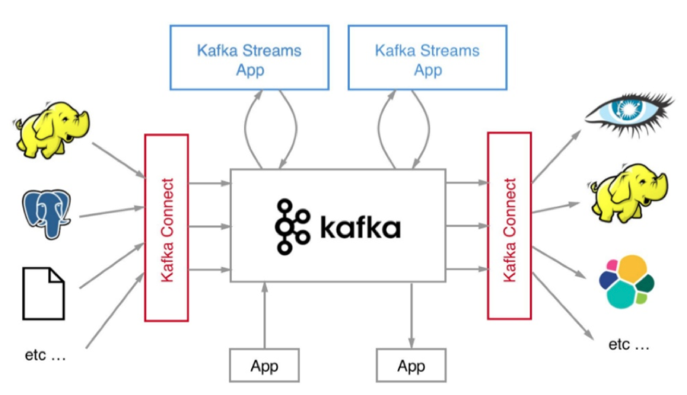
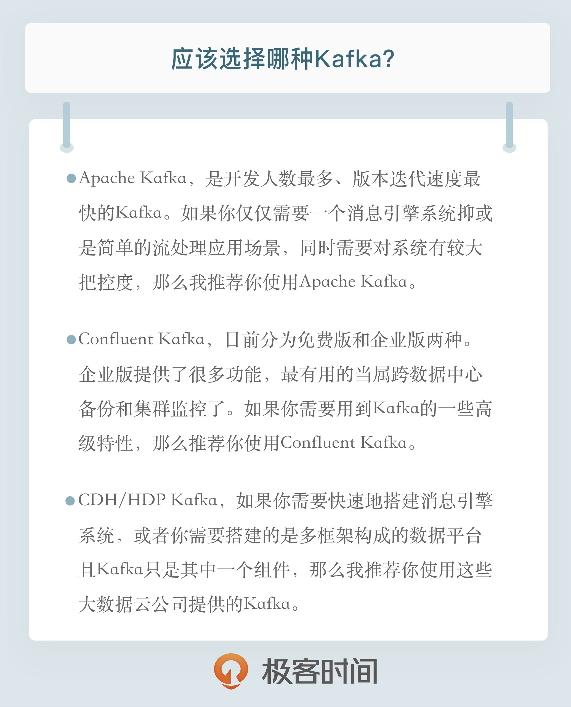

- 00 开篇词 为什么要学习Kafka？.md
- 01 消息引擎系统ABC.md
- 02 一篇文章带你快速搞定Kafka术语.md
- 03 Kafka只是消息引擎系统吗？.md
- 04 我应该选择哪种Kafka？.md
- 05 聊聊Kafka的版本号.md
- 06 Kafka线上集群部署方案怎么做？.md
- 07 最最最重要的集群参数配置（上）.md
- 08 最最最重要的集群参数配置（下）.md
- 09 生产者消息分区机制原理剖析.md
- 10 生产者压缩算法面面观.md
- 11 无消息丢失配置怎么实现？.md
- 12 客户端都有哪些不常见但是很高级的功能？.md
- 13 Java生产者是如何管理TCP连接的？.md
- 14 幂等生产者和事务生产者是一回事吗？.md
- 15 消费者组到底是什么？.md
- 16 揭开神秘的“位移主题”面纱.md
- 17 消费者组重平衡能避免吗？.md
- 18 Kafka中位移提交那些事儿.md
- 19 CommitFailedException异常怎么处理？.md
- 20 多线程开发消费者实例.md
- 21 Java 消费者是如何管理TCP连接的_.md
- 22 消费者组消费进度监控都怎么实现？.md
- 23 Kafka副本机制详解.md
- 24 请求是怎么被处理的？.md
- 25 消费者组重平衡全流程解析.md
- 26 你一定不能错过的Kafka控制器.md
- 27 关于高水位和Leader Epoch的讨论.md
- 28 主题管理知多少_.md
- 29 Kafka动态配置了解下？.md
- 30 怎么重设消费者组位移？.md
- 31 常见工具脚本大汇总.md
- 32 KafkaAdminClient：Kafka的运维利器.md
- 33 Kafka认证机制用哪家？.md
- 34 云环境下的授权该怎么做？.md
- 35 跨集群备份解决方案MirrorMaker.md
- 36 你应该怎么监控Kafka？.md
- 37 主流的Kafka监控框架.md
- 38 调优Kafka，你做到了吗？.md
- 39 从0搭建基于Kafka的企业级实时日志流处理平台.md
- 40 Kafka Streams与其他流处理平台的差异在哪里？.md
- 41 Kafka Streams DSL开发实例.md
- 42 Kafka Streams在金融领域的应用.md
- 加餐 搭建开发环境、阅读源码方法、经典学习资料大揭秘.md
- 用户故事 黄云：行百里者半九十.md
- 结束语 以梦为马，莫负韶华！.md
04 我应该选择哪种Kafka？
在专栏上一期中，我们谈了Kafka当前的定位问题，Kafka不再是一个单纯的消息引擎系统，而是能够实现精确一次（Exactly-once）处理语义的实时流处理平台。
你可能听说过Apache Storm、Apache Spark Streaming抑或是Apache Flink，它们在大规模流处理领域可都是响当当的名字。令人高兴的是，Kafka经过这么长时间的不断迭代，现在已经能够稍稍比肩这些框架了。我在这里使用了“稍稍”这个字眼，一方面想表达Kafka社区对于这些框架心存敬意；另一方面也想表达目前国内鲜有大厂将Kafka用于流处理的尴尬境地，毕竟Kafka是从消息引擎“半路出家”转型成流处理平台的，它在流处理方面的表现还需要经过时间的检验。
如果我们把视角从流处理平台扩展到流处理生态圈，Kafka更是还有很长的路要走。前面我提到过Kafka Streams组件，正是它提供了Kafka实时处理流数据的能力。但是其实还有一个重要的组件我没有提及，那就是Kafka Connect。
我们在评估流处理平台的时候，框架本身的性能、所提供操作算子（Operator）的丰富程度固然是重要的评判指标，但框架与上下游交互的能力也是非常重要的。能够与之进行数据传输的外部系统越多，围绕它打造的生态圈就越牢固，因而也就有更多的人愿意去使用它，从而形成正向反馈，不断地促进该生态圈的发展。就Kafka而言，Kafka Connect通过一个个具体的连接器（Connector），串联起上下游的外部系统。
整个Kafka生态圈如下图所示。值得注意的是，这张图中的外部系统只是Kafka Connect组件支持的一部分而已。目前还有一个可喜的趋势是使用Kafka Connect组件的用户越来越多，相信在未来会有越来越多的人开发自己的连接器。

说了这么多你可能会问这和今天的主题有什么关系呢？其实清晰地了解Kafka的发展脉络和生态圈现状，对于指导我们选择合适的Kafka版本大有裨益。下面我们就进入今天的主题——如何选择Kafka版本？
你知道几种Kafka？
咦？ Kafka不是一个开源框架吗，什么叫有几种Kafka啊？ 实际上，Kafka的确有好几种，这里我不是指它的版本，而是指存在多个组织或公司发布不同的Kafka。你一定听说过Linux发行版吧，比如我们熟知的CentOS、RedHat、Ubuntu等，它们都是Linux系统，但为什么有不同的名字呢？其实就是因为它们是不同公司发布的Linux系统，即不同的发行版。虽说在Kafka领域没有发行版的概念，但你姑且可以这样近似地认为市面上的确存在着多个Kafka“发行版”。
下面我就来梳理一下这些所谓的“发行版”以及你应该如何选择它们。当然了，“发行版”这个词用在Kafka框架上并不严谨，但为了便于我们区分这些不同的Kafka，我还是勉强套用一下吧。不过切记，当你以后和别人聊到这个话题的时候最好不要提及“发行版”这个词 ，因为这种提法在Kafka生态圈非常陌生，说出来难免贻笑大方。
1. Apache Kafka
Apache Kafka是最“正宗”的Kafka，也应该是你最熟悉的发行版了。自Kafka开源伊始，它便在Apache基金会孵化并最终毕业成为顶级项目，它也被称为社区版Kafka。咱们专栏就是以这个版本的Kafka作为模板来学习的。更重要的是，它是后面其他所有发行版的基础。也就是说，后面提到的发行版要么是原封不动地继承了Apache Kafka，要么是在此之上扩展了新功能，总之Apache Kafka是我们学习和使用Kafka的基础。
2. Confluent Kafka
我先说说Confluent公司吧。2014年，Kafka的3个创始人Jay Kreps、Naha Narkhede和饶军离开LinkedIn创办了Confluent公司，专注于提供基于Kafka的企业级流处理解决方案。2019年1月，Confluent公司成功融资D轮1.25亿美元，估值也到了25亿美元，足见资本市场的青睐。
这里说点题外话， 饶军是我们中国人，清华大学毕业的大神级人物。我们已经看到越来越多的Apache顶级项目创始人中出现了中国人的身影，另一个例子就是Apache Pulsar，它是一个以打败Kafka为目标的新一代消息引擎系统。至于在开源社区中活跃的国人更是数不胜数，这种现象实在令人振奋。
还说回Confluent公司，它主要从事商业化Kafka工具开发，并在此基础上发布了Confluent Kafka。Confluent Kafka提供了一些Apache Kafka没有的高级特性，比如跨数据中心备份、Schema注册中心以及集群监控工具等。
3. Cloudera/Hortonworks Kafka
Cloudera提供的CDH和Hortonworks提供的HDP是非常著名的大数据平台，里面集成了目前主流的大数据框架，能够帮助用户实现从分布式存储、集群调度、流处理到机器学习、实时数据库等全方位的数据处理。我知道很多创业公司在搭建数据平台时首选就是这两个产品。不管是CDH还是HDP里面都集成了Apache Kafka，因此我把这两款产品中的Kafka称为CDH Kafka和HDP Kafka。
当然在2018年10月两家公司宣布合并，共同打造世界领先的数据平台，也许以后CDH和HDP也会合并成一款产品，但能肯定的是Apache Kafka依然会包含其中，并作为新数据平台的一部分对外提供服务。
特点比较
Okay，说完了目前市面上的这些Kafka，我来对比一下它们的优势和劣势。
1. Apache Kafka
对Apache Kafka而言，它现在依然是开发人数最多、版本迭代速度最快的Kafka。在2018年度Apache基金会邮件列表开发者数量最多的Top 5排行榜中，Kafka社区邮件组排名第二位。如果你使用Apache Kafka碰到任何问题并提交问题到社区，社区都会比较及时地响应你。这对于我们Kafka普通使用者来说无疑是非常友好的。
但是Apache Kafka的劣势在于它仅仅提供最最基础的组件，特别是对于前面提到的Kafka Connect而言，社区版Kafka只提供一种连接器，即读写磁盘文件的连接器，而没有与其他外部系统交互的连接器，在实际使用过程中需要自行编写代码实现，这是它的一个劣势。另外Apache Kafka没有提供任何监控框架或工具。显然在线上环境不加监控肯定是不可行的，你必然需要借助第三方的监控框架实现对Kafka的监控。好消息是目前有一些开源的监控框架可以帮助用于监控Kafka（比如Kafka manager）。
总而言之，如果你仅仅需要一个消息引擎系统亦或是简单的流处理应用场景，同时需要对系统有较大把控度，那么我推荐你使用Apache Kafka。
2. Confluent Kafka
下面来看Confluent Kafka。Confluent Kafka目前分为免费版和企业版两种。前者和Apache Kafka非常相像，除了常规的组件之外，免费版还包含Schema注册中心和REST proxy两大功能。前者是帮助你集中管理Kafka消息格式以实现数据前向/后向兼容；后者用开放HTTP接口的方式允许你通过网络访问Kafka的各种功能，这两个都是Apache Kafka所没有的。
除此之外，免费版包含了更多的连接器，它们都是Confluent公司开发并认证过的，你可以免费使用它们。至于企业版，它提供的功能就更多了。在我看来，最有用的当属跨数据中心备份和集群监控两大功能了。多个数据中心之间数据的同步以及对集群的监控历来是Kafka的痛点，Confluent Kafka企业版提供了强大的解决方案帮助你“干掉”它们。
不过Confluent Kafka的一大缺陷在于，Confluent公司暂时没有发展国内业务的计划，相关的资料以及技术支持都很欠缺，很多国内Confluent Kafka使用者甚至无法找到对应的中文文档，因此目前Confluent Kafka在国内的普及率是比较低的。
一言以蔽之，如果你需要用到Kafka的一些高级特性，那么推荐你使用Confluent Kafka。
3. CDH/HDP Kafka
最后说说大数据云公司发布的Kafka（CDH/HDP Kafka）。这些大数据平台天然集成了Apache Kafka，通过便捷化的界面操作将Kafka的安装、运维、管理、监控全部统一在控制台中。如果你是这些平台的用户一定觉得非常方便，因为所有的操作都可以在前端UI界面上完成，而不必去执行复杂的Kafka命令。另外这些平台提供的监控界面也非常友好，你通常不需要进行任何配置就能有效地监控 Kafka。
但是凡事有利就有弊，这样做的结果是直接降低了你对Kafka集群的掌控程度。毕竟你对下层的Kafka集群一无所知，你怎么能做到心中有数呢？这种Kafka的另一个弊端在于它的滞后性。由于它有自己的发布周期，因此是否能及时地包含最新版本的Kafka就成为了一个问题。比如CDH 6.1.0版本发布时Apache Kafka已经演进到了2.1.0版本，但CDH中的Kafka依然是2.0.0版本，显然那些在Kafka 2.1.0中修复的Bug只能等到CDH下次版本更新时才有可能被真正修复。
简单来说，如果你需要快速地搭建消息引擎系统，或者你需要搭建的是多框架构成的数据平台且Kafka只是其中一个组件，那么我推荐你使用这些大数据云公司提供的Kafka。
小结
总结一下，我们今天讨论了不同的Kafka“发行版”以及它们的优缺点，根据这些优缺点，我们可以有针对性地根据实际需求选择合适的Kafka。下一期，我将带你领略Kafka各个阶段的发展历程，这样我们选择Kafka功能特性的时候就有了依据，在正式开启Kafka应用之路之前也夯实了理论基础。
最后我们来复习一下今天的内容：
- Apache Kafka，也称社区版Kafka。优势在于迭代速度快，社区响应度高，使用它可以让你有更高的把控度；缺陷在于仅提供基础核心组件，缺失一些高级的特性。
- Confluent Kafka，Confluent公司提供的Kafka。优势在于集成了很多高级特性且由Kafka原班人马打造，质量上有保证；缺陷在于相关文档资料不全，普及率较低，没有太多可供参考的范例。
- CDH/HDP Kafka，大数据云公司提供的Kafka，内嵌Apache Kafka。优势在于操作简单，节省运维成本；缺陷在于把控度低，演进速度较慢。

开放讨论
设想你是一家创业公司的架构师，公司最近准备改造现有系统，引入Kafka作为消息中间件衔接上下游业务。作为架构师的你会怎么选择合适的Kafka发行版呢？
欢迎你写下自己的思考或疑问，我们一起讨论 。如果你觉得有所收获，也欢迎把文章分享给你的朋友。
© 2019 - 2023 Liangliang Lee. Powered by gin and hexo-theme-book.